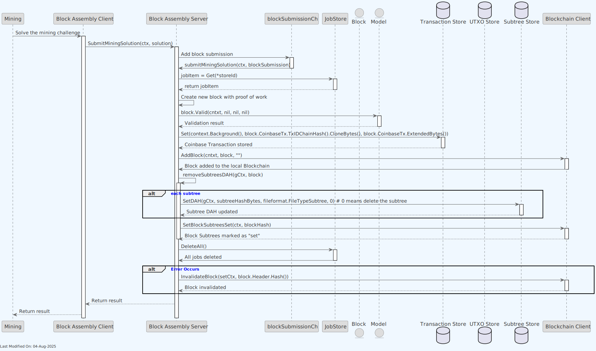
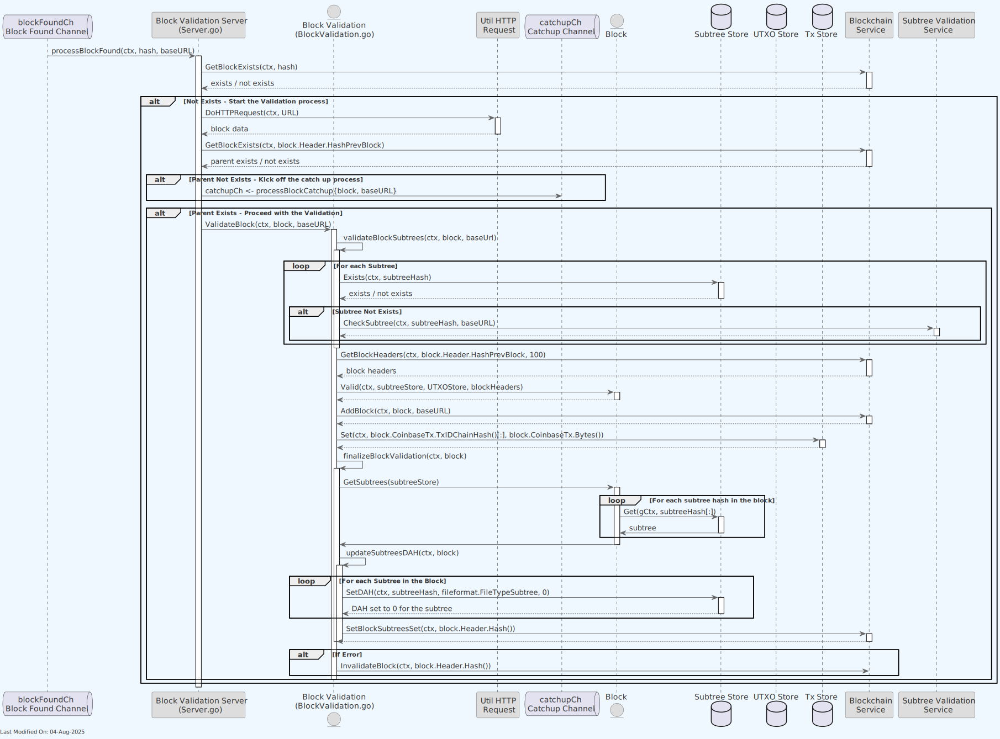
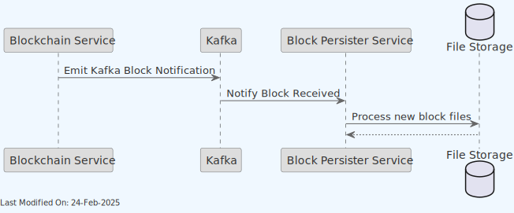
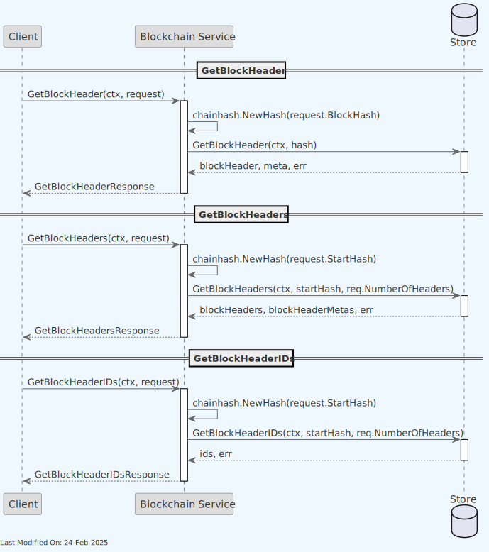
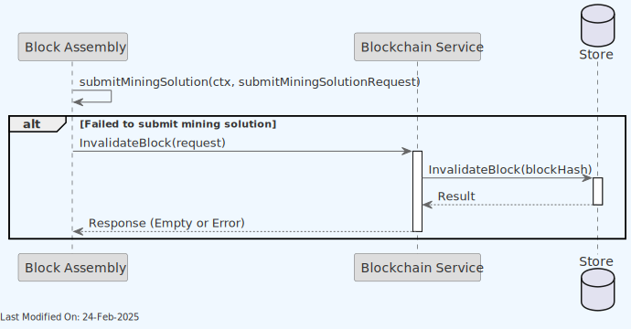

Blockchain Service
Index
- Description
- Functionality
- 2.1. Service initialization
- 2.2. Adding a new block to the blockchain
- 2.3. Sending new block notifications to the Block Persister
- 2.4. Getting a block from the blockchain
- 2.5. Getting the last N blocks from the blockchain
- 2.6. Checking if a Block Exists in the Blockchain
- 2.7. Getting the Best Block Header
- 2.8. Getting the Block Headers
- 2.9. Invalidating a Block
- 2.10. Subscribing to Blockchain Events
- 2.11. Triggering a Subscription Notification
- gRPC Protobuf Definitions
- Data Model
- Technology
- Directory Structure and Main Files
- How to run
- Configuration
- Additional Technical Details
- Other Resources
1. Description
This service implements a local Bitcoin SV (BSV) Blockchain service, maintaining the blockchain as understood by the node.
The service exposes various RPC methods such as AddBlock, GetBlock, InvalidateBlock and Subscribe.
The main features of the service are:
-
Subscription Management: The service can handle live subscriptions. Clients can subscribe to blockchain events, and the service will send them notifications. It manages new and dead subscriptions and sends out notifications accordingly.
-
Adding a new Block to the Blockchain: Allows adding a new block to the blockchain. It accepts a block request, processes it, and stores it in the blockchain store. Notifications are sent out about this new block.
-
Block Retrieval: Provides various methods to retrieve block information (
GetBlock,GetLastNBlocks,GetBlockExistsfunctions). -
Block Invalidation: It allows to invalidate blocks (
InvalidateBlockfunction), as part of a rollback process.
Note: For information about how the Blockchain service is initialized during daemon startup and how it interacts with other services, see the Teranode Daemon Reference.

To fulfill its purpose, the service interfaces with a blockchain store for data persistence and retrieval.

2. Functionality
2.1. Service initialization
Explanation of the sequence:
-
New Method:
- The
Mainrequests a new instance of theBlockchainservice by calling theNewfunction with a logger. - Inside the
Newmethod, theBlockchain Serviceperforms initialization tasks including setting up the blockchain store, initializing various channels, and preparing the context and subscriptions.
- The
-
Start Method:
- The
Maincalls theStartmethod on theBlockchainservice instance. - The
Blockchain Servicestarts server operations, including channel listeners and the GRPC server. - The service enters a loop handling notifications and subscriptions.
- The
2.2. Adding a new block to the blockchain
There are 2 clients invoking this endpoint:
- The
Block Assemblyservice:- The
Block Assemblyservice calls theAddBlockmethod on theBlockchain Serviceto add a new mined block to the blockchain.
- The
The sequence diagram for the Block Assembly to add a new block to the blockchain is as follows:

2. The Block Validation service:
- The Block Validation service calls the AddBlock method on the Blockchain Service to add a new block (received from another node) to the blockchain.
The sequence diagram for the Block Validation to add a new block to the blockchain is as follows:
 Explanation of the sequences:
-
Client Request:
- The
Clientcalls theAddBlockmethod on theBlockchain Service, passing the block request.
- The
-
Parse Block Header:
- The
Blockchain Serviceparses the block header from the request. If there's an error, it returns the error to the client and the process stops.
- The
-
Parse Coinbase Transaction:
- If the header parsing is successful, the service then parses the coinbase transaction. Again, if there's an error, it returns the error to the client.
-
Parse Subtree Hashes:
- If the coinbase transaction parsing is successful, the service then parses the subtree hashes. If there's an error in parsing, it returns the error to the client.
-
Store Block:
- If all parsing steps are successful, the
Blockchain Servicestores the block using theBlock Store.
- If all parsing steps are successful, the
-
Handle Storage Response:
- If there's an error in storing the block, the
Blockchain Servicereturns the error to the client. - If the block is stored successfully, the
Blockchain Serviceproceeds to send notifications.
- If there's an error in storing the block, the
-
Send Notifications:
- The service sends notifications for the block.
2.3. Sending new block notifications to the Block Persister
The Blockchain service, after adding a new block, emits a Kafka notification which is received by the Block Persister service. The Block Persister service is responsible for post-processing the block and storing it in a file format, in a persistent data store (such as S3).

The Blockchain service, based on standard practices, will retry sending the message until Kafka receives it. In case of Kafka downtime, the service will keep retrying for as long as the message is not sent.
2.4. Getting a block from the blockchain
Explanation of the sequence:
-
Client Request:
- The
Clientcalls theGetBlockmethod on theBlockchain Service, passing the context and the request.
- The
-
Parse Block Hash:
- The
Blockchain Serviceuses theModelto parse the block hash from the request. If there's an error, it returns the error to the client.
- The
-
Retrieve Block from Store:
- If the hash parsing is successful, the service then retrieves the block from the
Storeusing the parsed hash.
- If the hash parsing is successful, the service then retrieves the block from the
-
Handle Store Response:
- If there's an error in retrieving the block, the service returns the error to the client.
- If the block is successfully retrieved, the service proceeds to prepare the response.
-
Prepare Response:
- The service loops through each subtree hash in the block, converting them to bytes.
- The service creates a
GetBlockResponsewith the block's header, height, coinbase transaction, subtree hashes, transaction count, and size in bytes.
-
Return Response:
- The
Blockchain Servicereturns the preparedGetBlockResponseto theClient Code.
- The
There are 2 clients invoking this endpoint:
-
The
Asset Serverservice:- The
Asset Serverservice calls theGetBlockmethod on theBlockchain Serviceto retrieve a block from the blockchain.
- The
-
The
Block Assemblyservice: - The
Block Assemblyservice calls theGetBlockmethod on theBlockchain Serviceto retrieve a block from the blockchain.
2.5. Getting the last N blocks from the blockchain
Explanation of the sequence:
-
Client Request:
- The
Clientinitiates a call to theGetLastNBlocksmethod on theBlockchain Service, passing the context and the request.
- The
-
Retrieve Blocks from Store:
- The
Blockchain Servicethen calls theGetLastNBlocksmethod on theStore, passing the number of blocks, orphan inclusion flag, and the starting height from the request.
- The
-
Handle Store Response:
- If there's an error in retrieving the last N blocks, the service returns the error to the client.
- If the blocks are successfully retrieved, the service prepares the response.
-
Prepare and Return Response:
- The
Blockchain Servicecreates aGetLastNBlocksResponsecontaining the retrievedblockInfo. - It then returns this response to the
Client.
- The
The Asset Server service is the only client invoking this endpoint. It calls the GetLastNBlocks method on the Blockchain Service to retrieve the last N blocks from the blockchain.
2.6. Checking if a Block Exists in the Blockchain

Explanation of the sequence:
-
Client Request:
- The
Clientinitiates a call to theGetBlockExistsmethod on theBlockchain Service, providing the context and request (which includes the block hash).
- The
-
Retrieve Block Existence from Store:
- The
Blockchain Serviceprocesses the request by first converting the provided hash in the request to achainhash.Hashobject. - It then queries the
Storeto check if the block exists, using the adjusted context (ctx1) and the block hash.
- The
-
Handle Store Response:
- If there's an error in checking the existence of the block, the service returns the error to the client.
- If the existence check is successful, the service prepares the response.
-
Prepare and Return Response:
- The
Blockchain Servicecreates aGetBlockExistsResponse, indicating whether the block exists or not. - It then returns this response to the
Client.
- The
The Block Validation service is the only client invoking this endpoint. It calls the GetBlockExists method on the Blockchain Service to check if a block exists in the blockchain.
2.7. Getting the Best Block Header
Explanation of the sequence:
-
Client Request:
- The
Clientinitiates a call to theGetBestBlockHeadermethod on theBlockchain Service, providing the context and an empty message.
- The
-
Retrieve Best Block Header from Store:
- The
Blockchain Serviceprocesses the request by querying theStorefor the best block header, using the adjusted context (ctx1).
- The
-
Handle Store Response:
- If there's an error in retrieving the best block header, the service returns the error to the client.
- If the retrieval is successful, the service prepares the response.
-
Prepare and Return Response:
- The
Blockchain Servicecreates aGetBlockHeaderResponsewith the block header, height, transaction count, size in bytes, and miner information. - It then returns this response to the
Client.
- The
Multiple services make use of this endpoint, including the Block Assembly, P2P Server, and Asset Server services, as well as the UTXO Store.
2.8. Getting the Block Headers
The methods GetBlockHeader, GetBlockHeaders, and GetBlockHeaderIDs in the Blockchain service provide different ways to retrieve information about blocks in the blockchain.

-
GetBlockHeader:
- Purpose: Retrieves a single block header.
- Process:
- It takes a
GetBlockHeaderRequestcontaining the hash of the desired block. - Converts the hash into a
chainhash.Hashobject. - Calls
GetBlockHeaderon the store, providing the context and the hash, to fetch the block header and associated metadata. - If successful, it creates and returns a
GetBlockHeaderResponsecontaining the block header's byte representation and metadata like height, transaction count, size, and miner.
- It takes a
-
GetBlockHeaders:
- Purpose: Fetches multiple block headers starting from a given hash.
- Process:
- Accepts a
GetBlockHeadersRequestwith the starting block hash and the number of headers to retrieve. - Converts the starting hash into a
chainhash.Hashobject. - Calls
GetBlockHeaderson the store to obtain a list of block headers and their heights. - Assembles the headers into a byte array and returns them in a
GetBlockHeadersResponse.
- Accepts a
-
GetBlockHeaderIDs:
- Purpose: Retrieves the IDs (hashes) of a range of block headers.
- Process:
- Receives a
GetBlockHeadersRequestsimilar toGetBlockHeaders. - Converts the start hash to a
chainhash.Hashobject. - Uses the store's
GetBlockHeaderIDsmethod to fetch the IDs of the requested block headers. - Returns the IDs in a
GetBlockHeaderIDsResponse.
- Receives a
Each of these methods serves a specific need:
GetBlockHeaderis for fetching detailed information about a single block.GetBlockHeadersis useful for getting information about a sequence of blocks.GetBlockHeaderIDsprovides a lighter way to retrieve just the IDs of a range of block headers without the additional metadata.
Multiple services make use of these endpoints, including the Block Assembly, Block Validation, and Asset Server services.
2.9. Invalidating a Block

- The
Block Assemblysends anInvalidateBlockrequest to theBlockchain Service. - The
Blockchain Serviceprocesses the request and calls theInvalidateBlockmethod on theStore, passing the block hash. - The
Storeperforms the invalidation operation and returns the result (success or error) back to theBlockchain Service. - Finally, the
Blockchain Servicereturns a response to theClient, which is either an empty response (indicating success) or an error message.
2.10. Subscribing to Blockchain Events
The Blockchain service provides a subscription mechanism for clients to receive notifications about blockchain events.
In this diagram, the sequence of operations is as follows:
- The
Clientsends aSubscriberequest to theBlockchain Client. - The
Blockchain Serverreceives the subscription request and adds it to theSubscription Store(a map of subscriber channels). - The server then enters a loop where it waits for either the client's context to be done (indicating disconnection) or the subscription to end.
- If the client's context is done, the server logs the disconnection and breaks out of the loop. If the subscription ends, the loop is also exited.
- The server then sends back a response to the client, indicating that the subscription has been established or ended.
- On the client side, after establishing the subscription, it manages the subscription by continuously receiving stream notifications from the server and processing them as they arrive.
Multiple services make use of the subscription service, including the Block Assembly, Block Validation, P2P, and Asset Server services, and UTXO store. To know more, check the documentation of those services.
2.11. Triggering a Subscription Notification
There are two distinct paths for sending notifications, notifications originating from the Blockchain Server and notifications originating from a Blockchain Client gRPC client.
-
Path 1: Notification Originating from Blockchain Server
- The
Blockchain Serverprocesses anAddBlockor aSetBlockSubtreesSetcall. TheAddBlocksequence can be seen in the diagram above. - Inside this method, it creates a notification of type
MiningOnorBlock. - The server then calls its own
SendNotificationmethod to disseminate this notification. - The
Subscription Storeis queried to send the notification to all relevant subscribers.
- The
-
Path 2: Notification from Block Assembly Through Blockchain Client
- The
Block Assemblycomponent requests theBlockchain Clientto send a notification, of typemodel.NotificationType_Subtree. - The
Blockchain Clientthen communicates with theBlockchain Serverto invoke theSendNotificationmethod. - Similar to Path 1, the server uses the
Subscription Storeto distribute the notification to all subscribers.
- The
In both scenarios, the mechanism for reaching the subscribers through the Subscription Store remains consistent.
For further detail, we show here the sequence for the SetBlockSubtreesSet call, not detailed in the diagram above.

3. gRPC Protobuf Definitions
The Blockchain Service uses gRPC for communication between nodes. The protobuf definitions used for defining the service methods and message formats can be seen here.
4. Data Model
The Blockchain works with the Block Data Model.
The blockchain database stores the block header, coinbase TX, and block merkle root. The following is the structure of the blocks data:
| Field | Type | Constraints | Description |
|---|---|---|---|
| id | BIGSERIAL | PRIMARY KEY | Unique identifier for each block. |
| parent_id | BIGSERIAL | REFERENCES blocks(id) | Identifier of the parent block. |
| version | INTEGER | NOT NULL | Version of the block. |
| hash | BYTEA | NOT NULL | Hash of the block. |
| previous_hash | BYTEA | NOT NULL | Hash of the previous block. |
| merkle_root | BYTEA | NOT NULL | Merkle root of the block. |
| block_time | BIGINT | NOT NULL | Timestamp of when the block was created. |
| n_bits | BYTEA | NOT NULL | Compact form of the block's target difficulty. |
| nonce | BIGINT | NOT NULL | Nonce used during the mining process. |
| height | BIGINT | NOT NULL | Height of the block in the blockchain. |
| chain_work | BYTEA | NOT NULL | Cumulative proof of work of the blockchain up to this block. |
| tx_count | BIGINT | NOT NULL | Number of transactions in the block. |
| size_in_bytes | BIGINT | NOT NULL | Size of the block in bytes. |
| subtree_count | BIGINT | NOT NULL | Number of subtrees in the block. |
| subtrees | BYTEA | NOT NULL | Serialized data of the subtrees. |
| coinbase_tx | BYTEA | NOT NULL | Serialized data of the coinbase transaction. |
| invalid | BOOLEAN | NOT NULL DEFAULT FALSE | Flag to mark the block as valid or invalid. |
| peer_id | VARCHAR(64) | NOT NULL | Identifier of the peer that provided the block. |
| inserted_at | TIMESTAMPTZ | NOT NULL DEFAULT CURRENT_TIMESTAMP | Timestamp of when the block was inserted in the database. |
The table structure is designed to store comprehensive information about each block in the blockchain, including its relationships with other blocks, its contents, and metadata.
5. Technology
-
PostgreSQL Database:
- The primary store technology for the blockchain service.
- Used for persisting blockchain data such as blocks, block headers, and state information.
- SQL scripts and functions (
/stores/blockchain/sql) facilitate querying and manipulating blockchain data within the PostgreSQL database.
-
Go Programming Language:
- The service is implemented in Go (Golang).
-
gRPC and Protocol Buffers:
- The service uses gRPC for inter-service communication.
- Protocol Buffers (
.protofiles) are used for defining the service API and data structures, ensuring efficient and strongly-typed data exchange.
-
gocore Library:
- Utilized for managing application configurations and statistics gathering.
-
Model Layer (in
/model):- Represents the data structures and business logic related to blockchain operations.
- Contains definitions for blocks and other blockchain components.
-
Prometheus for Metrics:
- Client in
metrics.go. - Used for monitoring the performance and health of the service.
- Client in
6. Directory Structure and Main Files
The Blockchain service is located in the ./services/blockchain directory. The following is the directory structure of the service:
services/blockchain
Client.go - Implements the client-side logic for interacting with the Blockchain service.
Difficulty.go - Manages difficulty adjustment logic for the blockchain.
Interface.go - Defines the interface for the Blockchain store, outlining required methods for implementation.
LocalClient.go - Provides a local client implementation for the Blockchain service, for internal or in-process use.
Server.go - Contains server-side logic for the Blockchain service, handling requests and processing blockchain operations.
blockchain_api
blockchain_api.pb.go - Auto-generated Go bindings from the `.proto` file, used for implementing the Blockchain service API.
blockchain_api.proto - The Protocol Buffers definition file for the Blockchain service API.
blockchain_api_extra.go - Supplemental code extending or enhancing the auto-generated API code.
blockchain_api_grpc.pb.go - Auto-generated gRPC bindings from the `.proto` file, specifically for gRPC communication.
fsm_extra.go - Additional logic related to the Finite State Machine (FSM) functionality.
data
|
fsm.go
- Implements the Finite State Machine logic for managing blockchain states.
fsm_visualizer
main.go - A tool for visualizing the Finite State Machine structure.
metrics.go
- Manages and implements functionality related to operational metrics of the Blockchain service.
work
work.go
- Used to compute the cumulative chain work.
Further to this, the store part of the service is kept under stores/blockchain. The following is the directory structure of the store:
stores/blockchain
Interface.go
- Defines the interface for blockchain storage, outlining the methods for blockchain data manipulation and retrieval.
README.md
- Contains documentation and information about the blockchain store.
mock.go
- Likely contains mock implementations for testing purposes.
new.go
- Contains the constructor or factory methods for creating new instances of the blockchain store.
options
Options.go
- Defines options or configurations for the blockchain store.
sql
CheckBlockIsInCurrentChain.go
CheckBlockIsInCurrentChain_test.go
ExportBlocksDB.go
GetBestBlockHeader.go
GetBestBlockHeader_test.go
GetBlock.go
GetBlockByHeight.go
GetBlockByHeight_test.go
GetBlockExists.go
GetBlockGraphData.go
GetBlockHeader.go
GetBlockHeaderIDs.go
GetBlockHeaderIDs_test.go
GetBlockHeaders.go
GetBlockHeadersByHeight.go
GetBlockHeadersFromHeight.go
GetBlockHeaders_test.go
GetBlockHeight.go
GetBlockHeight_test.go
GetBlockStats.go
GetBlock_test.go
GetBlocks.go
GetBlocksByTime.go
GetBlocksMinedNotSet.go
GetBlocksSubtreesNotSet.go
GetForkedBlockHeaders.go
GetHashOfAncestorBlock.go
GetHashOfAncestorBlock_test.go
GetHeader.go
GetHeader_test.go
GetLastNBlocks.go
GetSuitableBlock.go
GetSuitableBlock_test.go
InvalidateBlock.go
InvalidateBlock_test.go
LocateBlockHeaders.go
LocateBlockHeaders_test.go
RevalidateBlock.go
RevalidateBlock_test.go
SetBlockMinedSet.go
SetBlockSubtreesSet.go
State.go
State_test.go
StoreBlock.go
StoreBlock_test.go
sql.go
sql_test.go
7. How to run
To run the Blockchain Service locally, you can execute the following command:
SETTINGS_CONTEXT=dev.[YOUR_USERNAME] go run -Blockchain=1
Please refer to the Locally Running Services Documentation document for more information on running the Blockchain Service locally.
8. Configuration
For comprehensive configuration documentation including all settings, defaults, and interactions, see the Blockchain Settings Reference.
9. Additional Technical Details
9.1. Complete gRPC Method Coverage
In addition to the core methods described in the Functionality section, the Blockchain Service provides the following API endpoints:
FSM Management Methods
- SendFSMEvent: Sends an event to the blockchain FSM to trigger state transitions.
- GetFSMCurrentState: Retrieves the current state of the FSM.
- WaitFSMToTransitionToGivenState: Waits for FSM to reach a specific state.
- WaitUntilFSMTransitionFromIdleState: Waits for FSM to transition from IDLE state.
- Run, CatchUpBlocks, LegacySync, Idle: Transitions the service to specific operational modes.
State Management
- GetState: Retrieves a value from the blockchain state storage by its key.
- SetState: Stores a value in the blockchain state storage with the specified key.
Block Mining Status Methods
- GetBlockIsMined: Checks if a block has been marked as mined.
- SetBlockMinedSet: Marks a block as mined in the blockchain.
- GetBlocksMinedNotSet: Retrieves blocks that haven't been marked as mined.
- SetBlockSubtreesSet: Marks a block's subtrees as set.
- GetBlocksSubtreesNotSet: Retrieves blocks whose subtrees haven't been set.
Legacy Synchronization Methods
- GetBlockLocator: Creates block locators for chain synchronization.
- LocateBlockHeaders: Finds block headers using a locator.
- GetBestHeightAndTime: Retrieves the current best height and median time.
9.2. Finite State Machine Implementation
The Blockchain Service uses a Finite State Machine (FSM) to manage its operational states. This design allows the service to maintain a clear lifecycle and respond appropriately to different events.
For a comprehensive understanding of the Blockchain Service's FSM implementation, please refer to the dedicated State Management in Teranode documentation, which covers:
- FSM states (Idle, Running, CatchingBlocks, LegacySyncing)
- State transitions and events
- Allowed operations in each state
- FSM initialization and access methods
- Waiting on state transitions
The FSM implementation in the Blockchain Service exposes several gRPC methods for state management:
- GetFSMCurrentState: Returns the current state of the FSM
- WaitFSMToTransitionToGivenState: Waits for the FSM to reach a specific state
- SendFSMEvent: Sends events to trigger state transitions
- Run, CatchUpBlocks, LegacySync, Idle: Convenience methods that delegate to SendFSMEvent
The FSM ensures that the service only performs operations appropriate for its current state, providing isolation and predictable behavior.
9.3. Kafka Integration Details
The Blockchain Service integrates with Kafka for block notifications and event streaming:
Message Formats
Block notifications are serialized using Protocol Buffers and contain:
- Block header
- Block height
- Hash
- Transaction count
- Size in bytes
- Timestamp
Topics
- Blocks-Final: Used for finalized block notifications, consumed by the Block Persister service.
Error Handling
- The service implements exponential backoff retry for Kafka publishing failures.
- Failed messages are logged and retried based on the
blockchain_maxRetriesandblockchain_retrySleepsettings. - Persistent failures, after the retries are exhausted, are reported through the health monitoring endpoints (
/healthHTTP endpoint and theHealthGRPCgRPC method).
9.4. Error Handling Strategies
The Blockchain Service employs several strategies to handle errors and maintain resilience:
Network and Communication Errors
- Uses timeouts and context cancellation to handle hanging network operations.
- Implements retry mechanisms for transient failures with configured backoff periods.
Validation Errors
- Blocks with invalid headers, merkle roots, or proofs are rejected with appropriate error codes.
- Invalid blocks can be explicitly marked using the InvalidateBlock method.
Chain Reorganization and Longest Chain Tracking
The Blockchain Service implements sophisticated chain reorganization handling with optimized longest chain tracking:
Automatic Detection
- Detects chain splits and reorganizations automatically through block header validation
- Uses rollback and catch-up operations to handle chain reorganizations
- Limits reorganization depth for security (configurable via
blockchain_maxReorgDepth)
Optimized Longest Chain Selection
The service employs an optimized algorithm for tracking and selecting the longest valid chain:
Key Features:
- Efficient Chain Comparison: Uses cumulative proof-of-work (chainwork) rather than simple block height for chain selection
- Fast Fork Detection: Maintains indexed fork points to quickly identify competing chains
- Minimal Database Queries: Caches chain tips and their accumulated work to reduce database load
- Parallel Validation: Can validate multiple competing chain tips simultaneously
Implementation Details:
- Chainwork Tracking: Each block stores cumulative chainwork from genesis, allowing O(1) chain strength comparison
- Fork Point Cache: Maintains an in-memory cache of recent fork points for rapid reorganization detection
- Tip Management: Tracks multiple competing chain tips with their associated metadata:
- Total chainwork
- Block height
- Last validation timestamp
- Fork depth from main chain
Performance Benefits:
- Reduced latency in chain selection during high fork activity
- Lower database load through intelligent caching
- Faster recovery from network partitions
- Improved resilience to chain split scenarios
Configuration Options:
blockchain_maxReorgDepth: Maximum allowed reorganization depth (default: 6 blocks)blockchain_chainTipCacheSize: Number of competing tips to track (default: 10)blockchain_forkPointCacheSize: Size of fork point cache (default: 100)
Storage Errors
- Implements transaction-based operations with the store to maintain consistency.
- Reports persistent storage errors through health endpoints.